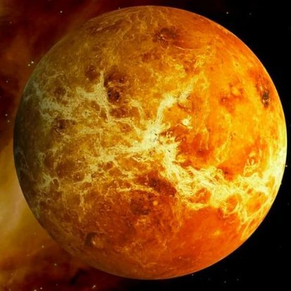

|

|
VENÜS
Venüs, Güneş Sisteminde, Güneş'e uzaklık bakımından ikinci sıradaki, sıcaklık bakımından da birinci sıradaki gezegendir.
Güneşe uzaklık bakımından ikinci sırada olmasına rağmen en sıcak gezegen olmasının nedeni, atmosferinin gelen güneş ışınlarının dışarı çıkmasına izin vermemesidir. Hatta bazı kişiler, eskiden Dünya gibi üzerinde canlıların yaşadığı yeşil bir gezegen olduğunu da söylerlerdi. Venüs; Zühre, Çolpan veya Çoban Yıldızı olarak da bilinir. Bu gezegen, adını Eski Roma tanrıçası Venüs'ten almıştır. Kendi ekseni etrafında, Güneş Sistemi'ndeki diğer tüm gezegenlerin aksi istikametinde döner. Güneş etrafındaki dönüşünü 224.7 Dünya gününde tamamlar.
Büyüklüğü açısından Dünya ile benzerlik gösterdiğinden Dünya ile kardeş gezegen veya dünyanın ikizi olarak da bilinir. Gökyüzünde Güneş'e yakın konumda bulunduğundan ve yörüngesi Dünya'nınkine göre Güneş'e daha yakın olduğundan, yeryüzünden sadece Güneş doğmadan önce veya battıktan sonra görülebilir. Bu yüzden Venüs; Akşam Yıldızı, Sabah Yıldızı veya Tan Yıldızı olarak da isimlendirilir. Görülebildiği zamanlar, gökyüzündeki en parlak cisim olarak dikkat çeker.
|